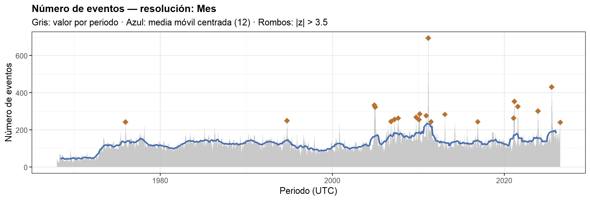
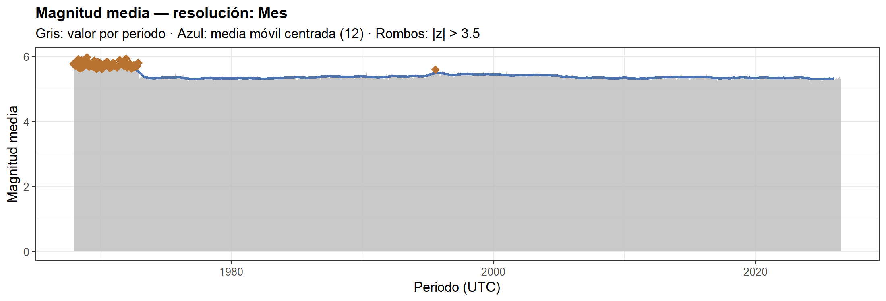
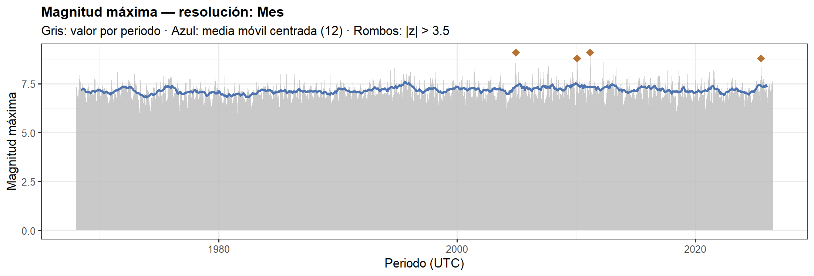
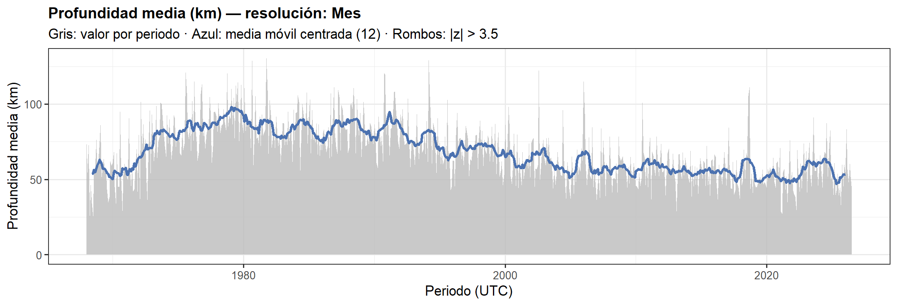
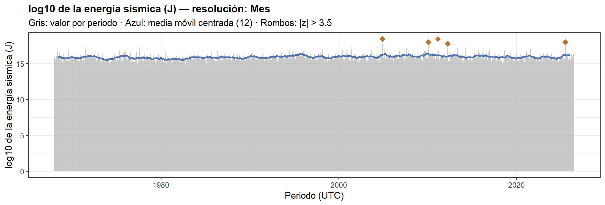
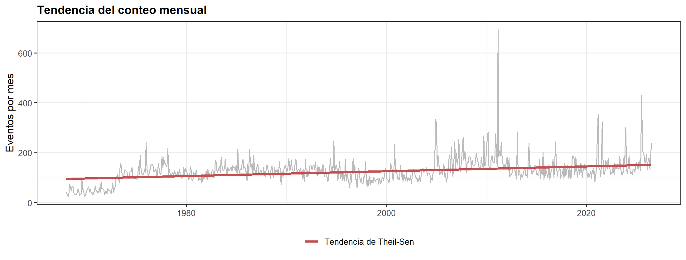
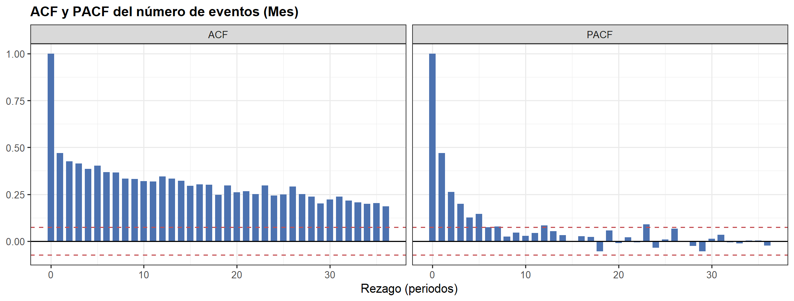
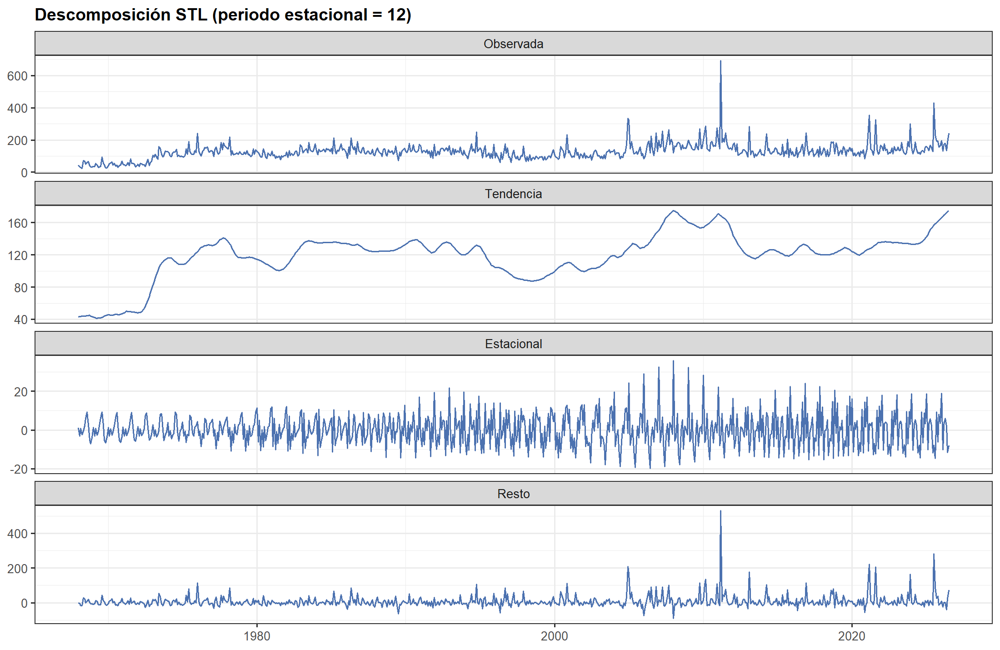
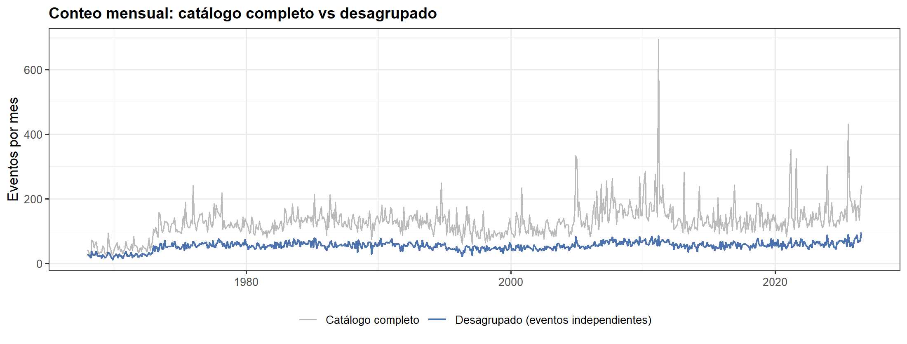
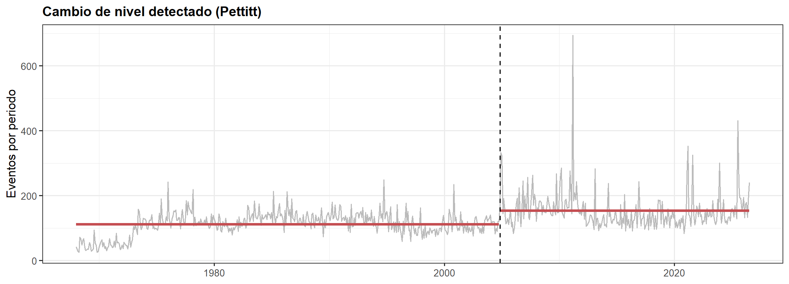

9 9. Análisis de series de tiempo de la actividad sísmica
Hasta aquí el catálogo se analizó como panel región × mes para detectar regiones fuera de lo esperado. Las secciones 9, 10 y 11 incorporan el enfoque de series de tiempo que implementan las aplicaciones interactivas (Dash y Shiny): se estudia el comportamiento temporal de la actividad sísmica, se comparan modelos de pronóstico del número mensual de eventos y se genera un pronóstico con incertidumbre.
Aclaración metodológica. No se emplea ningún modelo de regresión como predictor. La información útil para pronosticar está en la historia de la propia serie (autocorrelación). Además, pronosticar la frecuencia estadística de eventos NO equivale a predecir cuándo, dónde o con qué magnitud ocurrirá un terremoto.
Dependencias nuevas: tseries, urca y gridExtra (install.packages(c("tseries", "urca", "gridExtra"))).
library(tseries) # kpss.test
library(urca) # ur.df (ADF con selección de rezagos por AIC)
library(gridExtra) # disposición de gráficos9.0.1 9.1 Variables temporales construidas
| Variable | Definición | Observación |
|---|---|---|
n |
número de eventos por periodo | conteo; los periodos sin eventos valen 0 |
mag_media |
magnitud media del periodo | indefinida (NA) si el periodo está vacío |
mag_max |
magnitud máxima del periodo | indefinida si el periodo está vacío |
prof_media |
profundidad media (km) | indefinida si el periodo está vacío |
energia_J |
\(\sum_i 10^{1.5\,M_i + 4.8}\) (julios) | relación de Gutenberg–Richter (1956); se suma la energía, nunca las magnitudes |
Limitaciones de la energía: la fórmula supone una escala de magnitud homogénea (el catálogo mezcla mb, Mw, Ms…), es una aproximación empírica con incertidumbre de ±0.3 unidades logarítmicas por evento, y la suma de un periodo queda dominada por el sismo más grande (por eso se grafica en \(\log_{10}\)).
Periodos completos. Solo se usan periodos que terminan antes del último evento del catálogo: el mes (o semana, o día) en curso se excluye porque su conteo parcial subestimaría la actividad.
# ------------------- FILTROS (equivalentes a los de la aplicación) -------------------
REGION_BBOX <- NULL # NULL = global | c(lat_min, lat_max, lon_min, lon_max)
FECHA_INI <- NULL # NULL = inicio de la ventana válida (ANIO_INICIO-01-01)
FECHA_FIN <- NULL # NULL = último evento del catálogo
MAG_MIN <- 5.0
PROF_MIN <- 0; PROF_MAX <- 700
RESOLUCION <- "M" # "D" día | "W" semana (lunes a domingo) | "M" mes | "Y" año
N_PRUEBA <- 36 # meses reservados para la validación temporal (sección 10)
HORIZONTE <- 12 # meses a pronosticar (sección 11)
ANOMALIA_Z <- 3.5 # umbral |z| robusto (Iglewicz-Hoaglin)
# --------------------------------------------------------------------------------------
UNIDAD <- c(D = "day", W = "week", M = "month", Y = "year")
NOMBRE_RES <- c(D = "Día", W = "Semana (lunes a domingo)", M = "Mes", Y = "Año")
PER_EST <- c(D = 365, W = 52, M = 12, Y = NA)
T_INI <- if (is.null(FECHA_INI)) as.POSIXct(paste0(ANIO_INICIO, "-01-01"), tz = "UTC") else as.POSIXct(FECHA_INI, tz = "UTC")
T_FIN <- max(dfq$time)
if (!is.null(FECHA_FIN)) T_FIN <- min(T_FIN, as.POSIXct(FECHA_FIN, tz = "UTC") + 86399)
cat_ts <- dfq %>%
filter(time >= T_INI, time <= T_FIN, mag >= MAG_MIN,
!is.na(depth), depth >= PROF_MIN, depth <= PROF_MAX)
if (!is.null(REGION_BBOX)) {
cat_ts <- cat_ts %>%
filter(between(latitude, REGION_BBOX[1], REGION_BBOX[2]),
between(longitude, REGION_BBOX[3], REGION_BBOX[4]))
}
cat_ts <- cat_ts %>% select(time, mag, depth, latitude, longitude) %>% arrange(time)
siguiente <- function(p, u) switch(u, day = p + 1, week = p + 7,
month = p %m+% months(1), year = p %m+% years(1))
# Agrega el catálogo por periodo con rejilla completa (los periodos vacíos cuentan como 0)
agregar <- function(cat, res) {
u <- UNIDAD[[res]]
agg <- cat %>%
mutate(per = as.Date(floor_date(time, u, week_start = 1))) %>%
group_by(per) %>%
summarise(n = n(), mag_media = mean(mag), mag_max = max(mag),
prof_media = mean(depth), energia_J = sum(10^(1.5 * mag + 4.8)))
tibble(per = seq(min(agg$per), max(agg$per), by = u)) %>%
left_join(agg, by = "per") %>%
mutate(n = replace_na(n, 0L),
energia_J = replace_na(energia_J, 0),
log10_energia = if_else(energia_J > 0, log10(energia_J), NA_real_),
completo = as.POSIXct(per, tz = "UTC") >= T_INI &
as.POSIXct(siguiente(per, u), tz = "UTC") - 1 <= T_FIN)
}
serie_sel <- agregar(cat_ts, RESOLUCION) %>% filter(completo)
serie_m <- agregar(cat_ts, "M") %>% filter(completo)
n_m <- serie_m$nEventos tras filtros: 89,514 (1968-01-02 → 2026-08-22). Resolución de trabajo: Mes con 703 periodos completos. La serie mensual (703 meses) se usa en la tendencia, los modelos y el pronóstico.
## # A tibble: 6 × 8
## per n mag_media mag_max prof_media energia_J log10_energia completo
## <date> <int> <dbl> <dbl> <dbl> <dbl> <dbl> <lgl>
## 1 1968-01-01 42 5.77 7.37 73.5 1.07e16 16.0 TRUE
## 2 1968-02-01 36 5.72 7.3 54.6 9.15e15 16.0 TRUE
## 3 1968-03-01 28 5.72 6.51 73.0 1.37e15 15.1 TRUE
## 4 1968-04-01 25 5.83 7.5 25.9 1.39e16 16.1 TRUE
## 5 1968-05-01 72 5.91 8.2 46.5 1.94e17 17.3 TRUE
## 6 1968-06-01 68 5.64 7 34.3 5.91e15 15.8 TRUE9.0.2 9.2 Elección de la resolución temporal
No todas las resoluciones son adecuadas. Si un intervalo es demasiado fino la mayoría de periodos quedan vacíos: la magnitud y la profundidad medias quedan indefinidas y las pruebas estadísticas pierden sentido. Si es demasiado grueso se pierde información sobre el agrupamiento. Criterio: la resolución más fina con ≤ 10 % de periodos sin eventos y ≥ 60 periodos. El índice de dispersión (varianza/media) cuantifica la desviación respecto de un proceso de Poisson (= 1).
tab_res <- map_dfr(c("D", "W", "M", "Y"), function(r) {
s <- agregar(cat_ts, r) %>% filter(completo)
tibble(cod = r, Resolucion = NOMBRE_RES[[r]], Periodos = nrow(s),
`Media de eventos` = mean(s$n), Varianza = var(s$n),
`Indice de dispersion` = var(s$n) / mean(s$n),
`% periodos vacios` = mean(s$n == 0) * 100)
})
kab(tab_res %>% select(-cod), digits = 2)| Resolucion | Periodos | Media de eventos | Varianza | Indice de dispersion | % periodos vacios |
|---|---|---|---|---|---|
| Día | 21,417 | 4.18 | 19.79 | 4.74 | 7.46 |
| Semana (lunes a domingo) | 3,059 | 29.25 | 302.01 | 10.33 | 0.00 |
| Mes | 703 | 127.13 | 2,568.40 | 20.20 | 0.00 |
| Año | 58 | 1,519.53 | 170,301.55 | 112.07 | 0.00 |
ok <- tab_res %>% filter(`% periodos vacios` <= 10, Periodos >= 60)
REC <- if (nrow(ok)) ok$cod[1] else "M"Resolución actual: Mes. Recomendada para estos filtros: Día (la más fina con ≤ 10 % de periodos vacíos y ≥ 60 periodos). Las secciones de tendencia, modelos y pronóstico usan siempre conteos mensuales (los conteos diarios están dominados por secuencias de réplicas).
9.0.3 9.3 Evolución temporal, media móvil y anomalías
Para cada variable se muestra la serie por periodo (gris), la media móvil centrada de 12 periodos (azul) y los periodos anómalos (rombos naranja). La anomalía se define con el z-score robusto \(z=0.6745\,(x-\tilde{x})/\mathrm{MAD}\) y el umbral \(|z|>3.5\) (Iglewicz y Hoaglin, 1993). Se usa la mediana y la MAD porque la media y la desviación estándar están contaminadas justamente por los eventos extremos que se quieren detectar.
VARIABLES <- c(n = "Número de eventos", mag_media = "Magnitud media",
mag_max = "Magnitud máxima", prof_media = "Profundidad media (km)",
log10_energia = "log10 de la energía sísmica (J)")
z_robusto <- function(x) {
med <- median(x, na.rm = TRUE)
mad0 <- median(abs(x - med), na.rm = TRUE)
if (mad0 > 0) 0.6745 * (x - med) / mad0 else rep(NA_real_, length(x))
}
graf_serie <- function(d, col, etiqueta) {
d$y <- d[[col]]
d$ma <- as.numeric(rollapply(d$y, 12, mean, fill = NA, align = "center"))
d$z <- z_robusto(d$y)
d$anom <- !is.na(d$z) & abs(d$z) > ANOMALIA_Z
ggplot(d, aes(per, y)) +
geom_area(fill = GRIS, alpha = 0.8, na.rm = TRUE) +
geom_line(aes(y = ma), color = AZUL, linewidth = 1, na.rm = TRUE) +
geom_point(data = d %>% filter(anom), shape = 18, size = 3, color = "#B87333") +
labs(title = paste0(etiqueta, " — resolución: ", NOMBRE_RES[[RESOLUCION]]),
subtitle = paste0("Gris: valor por periodo · Azul: media móvil centrada (12) · Rombos: |z| > ", ANOMALIA_Z),
x = "Periodo (UTC)", y = etiqueta)
}
for (v in names(VARIABLES)) print(graf_serie(serie_sel, v, VARIABLES[[v]]))




z_n <- z_robusto(serie_sel$n)
anom_n <- serie_sel %>% mutate(z_robusto = z_n) %>%
filter(abs(z_robusto) > ANOMALIA_Z) %>%
arrange(desc(abs(z_robusto))) %>% select(per, n, z_robusto)Periodos anómalos en el número de eventos: 21 de 703.
| per | n | z_robusto |
|---|---|---|
| 2011-03-01 | 694 | 17.48 |
| 2025-07-01 | 431 | 9.41 |
| 2021-03-01 | 353 | 7.02 |
| 2004-12-01 | 333 | 6.41 |
| 2021-08-01 | 325 | 6.16 |
| 2005-01-01 | 322 | 6.07 |
| 2023-12-01 | 301 | 5.43 |
| 2010-03-01 | 285 | 4.94 |
| 2013-02-01 | 283 | 4.87 |
| 2010-12-01 | 276 | 4.66 |
| 2009-10-01 | 268 | 4.41 |
| 2007-09-01 | 263 | 4.26 |
| 2021-02-01 | 263 | 4.26 |
| 2007-04-01 | 256 | 4.05 |
| 2010-02-01 | 255 | 4.02 |
Lectura. Los periodos anómalos del conteo coinciden con secuencias de réplicas de grandes terremotos (p. ej. Sumatra 2004, Tohoku 2011): son anomalías reales, no errores. La magnitud máxima y la energía responden a eventos individuales, no a la tasa de ocurrencia.
9.0.4 9.4 Comparación de periodos y tendencia
Se compara la actividad por década (conteos mensuales) y se evalúa la tendencia con el tau de Kendall (prueba de Mann–Kendall; no paramétrica, no exige normalidad) y la pendiente robusta de Theil–Sen. Limitación: ambas pruebas suponen observaciones independientes, y la serie tiene autocorrelación, de modo que el p-valor es optimista.
dec <- serie_m %>%
group_by(decada = (year(per) %/% 10) * 10) %>%
summarise(meses = n(), media = mean(n), mediana = median(n), maximo = max(n), desv_est = sd(n))
kab(dec, digits = 1)| decada | meses | media | mediana | maximo | desv_est |
|---|---|---|---|---|---|
| 1,960 | 24 | 44.3 | 38.5 | 94 | 17.6 |
| 1,970 | 120 | 102.8 | 110.0 | 242 | 42.3 |
| 1,980 | 120 | 126.7 | 127.0 | 213 | 24.7 |
| 1,990 | 120 | 118.2 | 118.5 | 249 | 30.9 |
| 2,000 | 120 | 139.1 | 128.5 | 333 | 47.6 |
| 2,010 | 120 | 147.4 | 136.0 | 694 | 64.9 |
| 2,020 | 79 | 154.5 | 138.0 | 431 | 57.1 |
tt <- seq_along(n_m)
kt <- cor.test(tt, n_m, method = "kendall", exact = FALSE)
par_ij <- which(upper.tri(matrix(0, length(tt), length(tt))), arr.ind = TRUE)
pend <- median((n_m[par_ij[, 2]] - n_m[par_ij[, 1]]) / (par_ij[, 2] - par_ij[, 1]))
interc <- median(n_m - pend * tt)
ggplot(serie_m, aes(per, n)) +
geom_line(color = GRIS, linewidth = 0.5) +
geom_line(aes(y = interc + pend * tt, color = "Tendencia de Theil-Sen"), linewidth = 1.1) +
scale_color_manual(values = c("Tendencia de Theil-Sen" = ROJO), name = NULL) +
labs(title = "Tendencia del conteo mensual", x = NULL, y = "Eventos por mes")
- Kendall tau = +0.281. p = 1.23e-28 < 0.05 → se RECHAZA no hay tendencia monótona. Conclusión: existe tendencia monótona
- Pendiente de Theil–Sen: +0.97 eventos/mes por año.
9.0.5 9.5 Autocorrelación (ACF) y autocorrelación parcial (PACF)
La ACF mide la correlación de la serie con sus propios rezagos; la PACF la mide controlando los rezagos intermedios y orienta el orden autorregresivo. Bandas: ±1.96/√n (hipótesis de ruido blanco). La prueba de Ljung–Box contrasta conjuntamente que las primeras k autocorrelaciones sean nulas. Supuesto: serie (aprox.) estacionaria; en una serie con cambios de nivel la ACF decae lentamente y sobrestima la memoria.
x_sel <- as.numeric(serie_sel$n)
nl <- min(36, floor(length(x_sel) / 2) - 1)
ac_v <- as.numeric(acf(x_sel, lag.max = nl, plot = FALSE)$acf) # incluye rezago 0
pac_v <- c(1, as.numeric(pacf(x_sel, lag.max = nl, plot = FALSE)$acf)) # PACF(0) = 1 por convención
banda <- 1.96 / sqrt(length(x_sel))
d_ap <- bind_rows(tibble(tipo = "ACF", rezago = 0:nl, valor = ac_v),
tibble(tipo = "PACF", rezago = 0:nl, valor = pac_v))
ggplot(d_ap, aes(rezago, valor)) +
geom_col(fill = AZUL, width = 0.7) +
geom_hline(yintercept = c(-banda, banda), color = ROJO, linetype = "dashed") +
geom_hline(yintercept = 0) +
facet_wrap(~tipo) +
labs(title = paste0("ACF y PACF del número de eventos (", NOMBRE_RES[[RESOLUCION]], ")"),
x = "Rezago (periodos)", y = NULL)
- Rezagos 1–12 fuera de la banda (ACF): 12
- ACF rezago 1 = +0.469 | PACF rezago 1 = +0.469
- Ljung–Box: p = 0.00e+00 < 0.05 → se RECHAZA no hay autocorrelación. Conclusión: la serie tiene autocorrelación
9.0.6 9.6 Estacionariedad: ADF y KPSS (no se aplican a ciegas)
Las dos pruebas tienen hipótesis nulas opuestas, por eso se usan juntas:
| Prueba | H₀ | Supuestos / limitaciones |
|---|---|---|
| ADF (Dickey–Fuller aumentada) | existe raíz unitaria (no estacionaria) | baja potencia ante cambios de nivel; el número de rezagos depende de la implementación |
| KPSS | la serie es estacionaria (alrededor de una constante o tendencia) | muy sensible a la autocorrelación fuerte y a los cambios de nivel; p-valor interpolado en [0.01, 0.10] |
Se prueban dos especificaciones: con constante (estacionaria en torno a un nivel) y con constante + tendencia. Un cambio de régimen puede hacer que ambas rechacen su nula: ese resultado se interpreta como inconcluso, no como «no estacionaria» a secas.
diag_est <- function(adf_rech, p_kpss) {
k <- p_kpss < ALPHA
if (adf_rech && !k) "Estacionaria (ADF rechaza, KPSS no)"
else if (!adf_rech && k) "No estacionaria (ADF no rechaza, KPSS rechaza)"
else if (adf_rech && k) "Inconclusa: ambas rechazan (cambios de nivel / colas pesadas)"
else "Inconclusa: ninguna rechaza (poca potencia)"
}
# ADF con rezagos elegidos por AIC (máximo de Schwert); se compara con el valor crítico al 5 %
adf_u <- function(x, tipo) {
u <- ur.df(x, type = tipo, selectlags = "AIC", lags = floor(12 * (length(x) / 100)^0.25))
list(stat = u@teststat[1, 1], crit = u@cval[1, "5pct"])
}
adf_c <- adf_u(x_sel, "drift")
adf_t <- adf_u(x_sel, "trend")
kp_c <- kpss.test(x_sel, null = "Level")
kp_t <- kpss.test(x_sel, null = "Trend")
tab_est <- tibble(
Especificacion = c("Alrededor de una constante", "Alrededor de una tendencia"),
`ADF estad.` = c(adf_c$stat, adf_t$stat),
`ADF crítico 5 %` = c(adf_c$crit, adf_t$crit),
`ADF rechaza H0` = c(adf_c$stat < adf_c$crit, adf_t$stat < adf_t$crit),
`KPSS estad.` = c(unname(kp_c$statistic), unname(kp_t$statistic)),
`KPSS p` = c(kp_c$p.value, kp_t$p.value)) %>%
mutate(Diagnostico = map2_chr(`ADF rechaza H0`, `KPSS p`, diag_est))
kab(tab_est, digits = 4)| Especificacion | ADF estad. | ADF crítico 5 % | ADF rechaza H0 | KPSS estad. | KPSS p | Diagnostico |
|---|---|---|---|---|---|---|
| Alrededor de una constante | -3.2802 | -2.86 | TRUE | 3.1766 | 0.01 | Inconclusa: ambas rechazan (cambios de nivel / colas pesadas) |
| Alrededor de una tendencia | -5.5924 | -3.41 | TRUE | 0.3234 | 0.01 | Inconclusa: ambas rechazan (cambios de nivel / colas pesadas) |
Nota: en R el ADF (urca::ur.df) se decide con el valor crítico al 5 % (no entrega p-valor) y el KPSS (tseries::kpss.test) usa la ventana de rezagos corta; en Python (statsmodels) el ADF reporta p-valor y el KPSS usa selección automática de ancho de banda. Los estadísticos pueden diferir ligeramente, pero el diagnóstico conjunto debe coincidir.
9.0.7 9.7 Descomposición STL
STL (Cleveland et al., 1990) separa tendencia + estacionalidad + resto con regresión local robusta (robust = TRUE reduce la influencia de las réplicas extremas). Se resume con la fuerza de cada componente (Wang, Smith y Hyndman, 2006): \(F=\max\left(0,\,1-\mathrm{Var}(R)/\mathrm{Var}(C+R)\right)\), donde 0 = ausente y 1 = dominante. Solo es apropiada si hay un periodo estacional definido; en la resolución anual no aplica.
per_est <- PER_EST[[RESOLUCION]]
stl_ok <- !is.na(per_est) && length(x_sel) >= 2 * per_est
if (stl_ok) {
stl_f <- stl(ts(x_sel, frequency = per_est), s.window = 13, robust = TRUE)
stl_comp <- as.data.frame(stl_f$time.series)
d_stl <- tibble(per = rep(serie_sel$per, 4),
comp = factor(rep(c("Observada", "Tendencia", "Estacional", "Resto"), each = length(x_sel)),
levels = c("Observada", "Tendencia", "Estacional", "Resto")),
v = c(x_sel, stl_comp$trend, stl_comp$seasonal, stl_comp$remainder))
print(ggplot(d_stl, aes(per, v)) + geom_line(color = AZUL, linewidth = 0.5) +
facet_wrap(~comp, ncol = 1, scales = "free_y") +
labs(title = paste0("Descomposición STL (periodo estacional = ", per_est, ")"), x = NULL, y = NULL))
F_t <- max(0, 1 - var(stl_comp$remainder) / var(stl_comp$trend + stl_comp$remainder))
F_s <- max(0, 1 - var(stl_comp$remainder) / var(stl_comp$seasonal + stl_comp$remainder))
}
Fuerza de la tendencia: 0.426 | Fuerza de la estacionalidad: 0.022. Estacionalidad DÉBIL: un término estacional (SARIMA) añadiría parámetros sin justificación.
9.0.8 9.8 Agrupamiento temporal: réplicas y desagrupamiento (Gardner–Knopoff)
La sobredispersión y la autocorrelación son manifestaciones del agrupamiento: los terremotos grandes generan réplicas. El método de Gardner y Knopoff (1974) marca como réplicas/premonitores los eventos que caen dentro de una ventana espacio-temporal de un evento mayor, con ventana que crece con la magnitud. Se aplica una versión simplificada: ventana simétrica en el tiempo y distancia en km por el método de Gardner–Knopoff; los eventos ya marcados no generan ventana propia. Limitación: es un algoritmo determinista con ventanas empíricas; el porcentaje de eventos en secuencias depende del método y del catálogo.
gardner_knopoff <- function(cat) {
c0 <- cat %>% arrange(time)
t <- as.numeric(difftime(c0$time, c0$time[1], units = "days"))
M <- c0$mag
lat <- c0$latitude * pi / 180; lon <- c0$longitude * pi / 180
d_km <- 10^(0.1238 * M + 0.983)
t_d <- ifelse(M >= 6.5, 10^(0.032 * M + 2.7389), 10^(0.5409 * M - 0.547))
en_sec <- rep(FALSE, nrow(c0))
for (i in order(-M)) {
if (en_sec[i]) next
lo <- findInterval(t[i] - t_d[i], t, left.open = TRUE) + 1L
hi <- findInterval(t[i] + t_d[i], t)
if (lo > hi) next
idx <- lo:hi
idx <- idx[!en_sec[idx] & M[idx] <= M[i] & idx != i]
if (!length(idx)) next
a <- sin((lat[idx] - lat[i]) / 2)^2 + cos(lat[i]) * cos(lat[idx]) * sin((lon[idx] - lon[i]) / 2)^2
dist <- 2 * 6371 * asin(sqrt(a))
en_sec[idx[dist <= d_km[i]]] <- TRUE
}
c0$en_secuencia <- en_sec
c0
}
cat_gk <- gardner_knopoff(cat_ts)
pct_sec <- mean(cat_gk$en_secuencia) * 100
serie_ind <- agregar(cat_gk %>% filter(!en_secuencia), "M") %>%
select(per, n_ind = n) %>%
right_join(serie_m %>% select(per, n), by = "per") %>%
mutate(n_ind = replace_na(n_ind, 0L))
ind_disp <- tibble(Medida = c("Media mensual", "Varianza", "Indice de dispersion"),
`Catalogo completo` = c(mean(serie_ind$n), var(serie_ind$n), var(serie_ind$n) / mean(serie_ind$n)),
Desagrupado = c(mean(serie_ind$n_ind), var(serie_ind$n_ind), var(serie_ind$n_ind) / mean(serie_ind$n_ind)))
kab(ind_disp, digits = 2)| Medida | Catalogo completo | Desagrupado |
|---|---|---|
| Media mensual | 127.13 | 53.64 |
| Varianza | 2,568.40 | 174.26 |
| Indice de dispersion | 20.20 | 3.25 |
ggplot(serie_ind, aes(per)) +
geom_line(aes(y = n, color = "Catálogo completo"), linewidth = 0.5) +
geom_line(aes(y = n_ind, color = "Desagrupado (eventos independientes)"), linewidth = 0.7) +
scale_color_manual(values = c("Catálogo completo" = GRIS, "Desagrupado (eventos independientes)" = AZUL), name = NULL) +
labs(title = "Conteo mensual: catálogo completo vs desagrupado", x = NULL, y = "Eventos por mes")
Eventos en secuencias (réplicas/premonitores): 57.8 %; eventos independientes: 37,763.
Lectura. Si tras el desagrupamiento el índice de dispersión cae hacia 1 y los picos desaparecen, el agrupamiento por réplicas explica la sobredispersión y los picos del conteo: la serie desagrupada se acerca a un proceso de Poisson, mientras que la serie completa no se puede anticipar más allá de su nivel reciente.
9.0.9 9.9 Cambios de régimen: prueba de Pettitt
La prueba de Pettitt (1979) es no paramétrica (basada en rangos) y localiza el punto de cambio de nivel más probable, con p-valor aproximado \(p\approx 2\exp\!\left(-6K^2/(n^3+n^2)\right)\). Supone observaciones independientes y detecta un solo cambio de nivel; con agrupamiento y autocorrelación el p-valor es optimista, por lo que se interpreta como indicio, no como prueba definitiva.
pettitt <- function(x) {
n <- length(x)
U <- 2 * cumsum(rank(x)) - seq_len(n) * (n + 1)
Ua <- abs(U[-n])
t_ <- which.max(Ua)
K <- Ua[t_]
list(t = t_, K = K, p = min(1, 2 * exp(-6 * K^2 / (n^3 + n^2))))
}
pt <- pettitt(x_sel)
fecha_cp <- serie_sel$per[pt$t + 1]
m_antes <- mean(x_sel[1:pt$t])
m_despues <- mean(x_sel[(pt$t + 1):length(x_sel)])
ggplot(serie_sel, aes(per, n)) +
geom_line(color = GRIS, linewidth = 0.5) +
annotate("segment", x = min(serie_sel$per), xend = serie_sel$per[pt$t], y = m_antes, yend = m_antes, color = ROJO, linewidth = 1.1) +
annotate("segment", x = serie_sel$per[pt$t + 1], xend = max(serie_sel$per), y = m_despues, yend = m_despues, color = ROJO, linewidth = 1.1) +
geom_vline(xintercept = fecha_cp, linetype = "dashed") +
labs(title = "Cambio de nivel detectado (Pettitt)", x = NULL, y = "Eventos por periodo")
Punto de cambio más probable: 2004-11-01 (K = 58,590). p = 3.90e-26 < 0.05 → se RECHAZA no hay cambio de nivel. Conclusión: hay un cambio de nivel Nivel medio antes: 111.41 | después: 153.74.